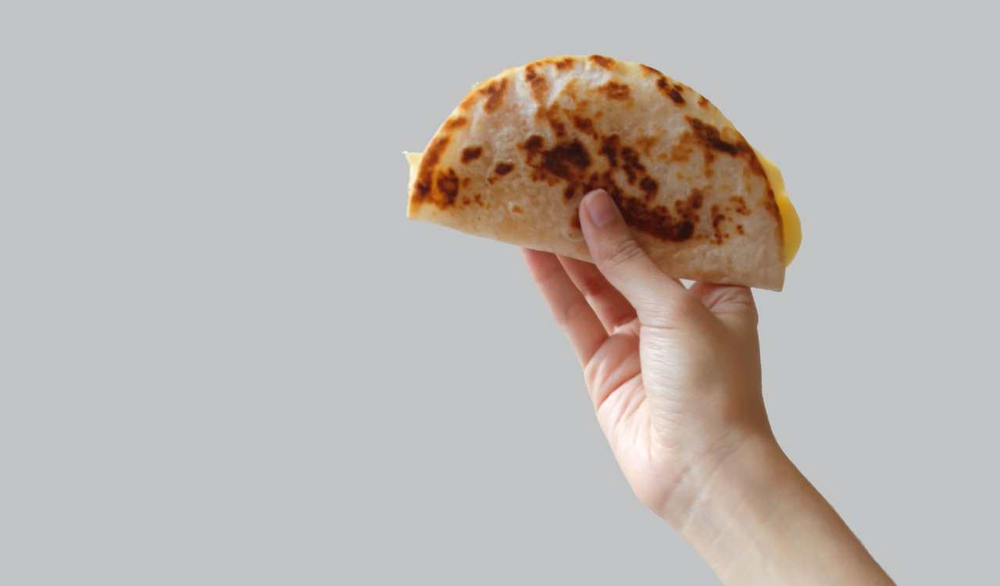
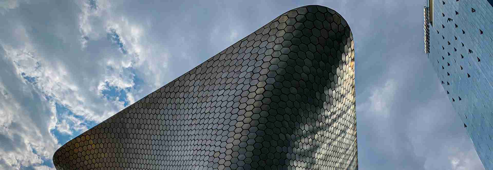

Mexico City History
Mexico City (Spanish: Ciudad de México, locally abbreviated as CDMX; Nahuatl languages: Āltepētl Mēxihco)
is the capital and largest city of Mexico and
the most populous city in North America. Mexico City is one of the most important cultural and
financial centers in the world. It is located in the Valley of Mexico (Valle de México), a large
valley in the high plateaus in the center of Mexico, at an altitude of 2,240 meters (7,350 ft). The city
has 16 subdivisions known as boroughs or demarcaciones territoriales.
3 Things that You Do Not Know About Mexico

Quesadilla
In the central and southern regions of Mexico, a quesadilla is a flat circle of cooked corn masa,
called a tortilla, warmed to soften it enough to be folded in half, and then filled. They are
typically filled with Oaxaca cheese (queso Oaxaca), a stringy Mexican cheese made by the pasta
filata (stretched-curd) method. The quesadilla is then cooked on a comal until the cheese has
completely melted.

Soumaya
The Museo Soumaya has a collection of over 66,000 pieces of art. The majority of the art consists of
European works from the 15th to the 20th centuries. It also holds Mexican art, religious relics, and
historical documents and coins. The museum contains the world's largest collection of
pre-Hispanic and colonial era coins.
The Angel of Independence
The base of the column is quadrangular with each vertex featuring a bronze sculpture symbolizing law,
war, justice and peace. Originally, nine steps led to the base, but due to the sinking of the
ground, an ongoing problem in Mexico City, fourteen more steps have been added.